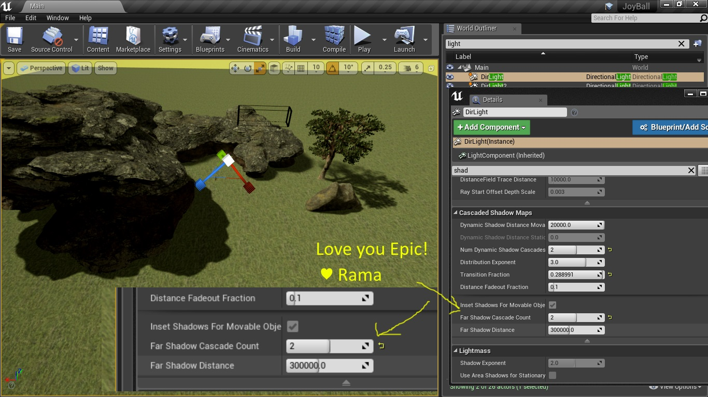

How To Prevent Dynamic Shadows From Fading At Large Distances From Camera
Contents
Overview
Author: ( )
In this wiki I show you how you can maintain shadows at large distances!
The Issue
In older engine versions shadows would fade out very quickly when viewed from afar or at oblique camera angles like in an RTS game.
Well I am so happy to announce that the feature Far Shadows now addresses this matter!
Far Shadows
This is the details panel of a directional light with filter Shadows

Conclusion
Yay! Now you can make RTS game in UE4 in complete comfort and joy!
Love you Epic!
♥
Rama